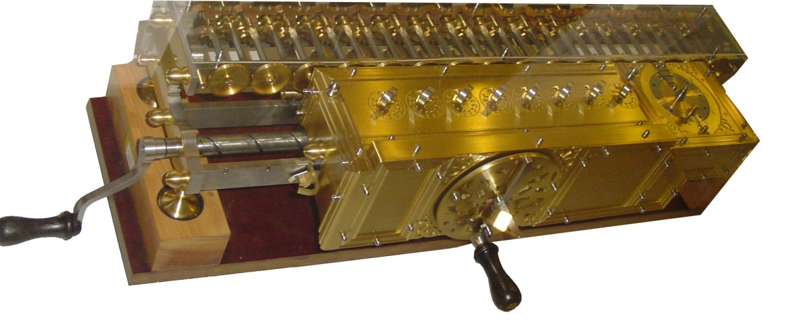
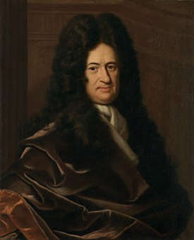

Арифмометр Лейбница, 1672 —арифмометр, изобретённый немецким математиком Готфридом Вильгельмом Лейбницем, Готфрида Вильгельма Лейбница который был способен складывать, вычитать, умножать и делить.
Идея создания машины, выполняющей вычисления, появилась у выдающегося немецкого математика и философа Готфрида Вильгельма Лейбница после его знакомства с голландским математиком и астрономом Христианом Гюйгенсом. Огромное количество вычислений, которое приходилось делать астроному, навело Лейбница на мысль о создании механического устройства, которое могло бы облегчить такие расчёты («Поскольку это недостойно таких замечательных людей, подобно рабам, терять время на вычислительную работу, которую можно было бы доверить кому угодно при использовании машины»).
Арифмометр был создан Лейбницем в 1673 году. Сложение чисел выполнялось в десятичной системе счисления при помощи связанных друг с другом колёс, так же как на вычислительной машине другого выдающегося учёного-изобретателя Блеза Паскаля — «Паскалине». Добавленная в конструкцию движущаяся часть и специальная рукоятка, позволявшая крутить ступенчатое колесо (в последующих вариантах машины — цилиндры), позволяли ускорить повторяющиеся операции сложения, при помощи которых выполнялось деление и перемножение чисел. Необходимое число повторных сложений выполнялось автоматически.
Машина была продемонстрирована Лейбницем во Французской академии наук и Лондонском королевском обществе. Один экземпляр арифмометра попал к Петру Первому.
Были построены два прототипа, до сегодняшнего дня только один сохранился в Национальной библиотеке Нижней Саксонии (нем. Niedersächsische Landesbibliothek) в Ганновере, Германия. Несколько поздних копий находятся в музеях Германии, например, один в Немецком музее в Мюнхене.
Несмотря на недостатки арифмометра Лейбница, он дал изобретателям арифмометров новые возможности. Привод, изобретённый Лейбницем — шагающий цилиндр или колесо Лейбница — использовался во многих вычислительных машинах на протяжении 300 лет, до 1970-х годов.
Го́тфрид Ви́льгельм Ле́йбниц (21 июня (1 июля) 1646 — 14 ноября 1716) — немецкий философ, логик, математик, механик, физик, юрист, историк, дипломат, изобретатель и языковед. Основатель и первый президент Берлинской Академии наук, член Лондонского королевского общества (1673), иностранный член Французской Академии наук.
